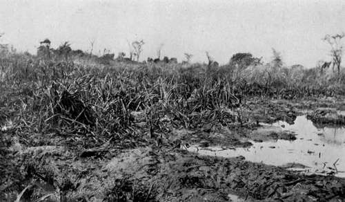

Tracking Game, Licences, And Camp Notes. Part 4
Description
This section is from the book "Wild Life In Central Africa", by Denis D. Lyell. Also available from Amazon: Wild Life in Central Africa.
Tracking Game, Licences, And Camp Notes. Part 4
For the lung shot aim at about six inches behind the shoulder, and pretty high. Shots aimed at the lungs may go high and break the spine, and then the stricken beast will collapse at once. If the lungs be punctured, game may run for a distance of from fifty to 200 yards before falling, or it may fall at once. When running off it will drop a lot of frothy blood from its mouth, and this blood will be a light crimson colour and covered writh frothy bubbles.
If one sees this frothy blood, game will almost certainly be recovered if tracked up, and the beast will likely be found dead not very far away.
Animals with a broken front leg may travel for hours ; but a broken hind leg will prevent game moving far, as the back legs are the driving machinery, so to speak, and the heaviest part of the animal is the hindquarters.
It is impossible to shoot much game without noticing instances of animals exhibiting great tenacity of life, and I have seen duikers run off with half their entrails dropped behind, and I once hit a warthog in the stomach with a soft-nosed bullet, and the stomach fell out of the exit hole and I picked it up on the spoor. I naturally thought the warthog would be lying dead; but it jumped up when approached, and I killed it with another bullet. This is not nice reading, and I will not mention other cases; I only state these to show how tenacious game is at times. Of course such incidents are exceptions, and not the rule ; and they are the result of bad shooting in the hind quarters. With experience one learns to aim coolly and not to fire uncertain long shots at animals standing at unknown angles. After seeing the pain caused by indifferent shooting, the humane-minded sportsman will take greater care in aligning the sights of his weapon, and he will take greater pains to get within a good sporting distance.
Personally, I find the best position for a standing shot is a rest against a tree, taking care that the barrel does not touch the wood, as the jar will cause the bullet to fly wide. When the grass is long it is impossible to sit down and expect to see the game, unless one is perched on an anthill or rock; but in the dry season, when the grass is burnt and the leaves withered, I find that the steadiest position is to sit down and put an elbow on each knee, which is a favourite position among the deerstalkers in the forests of Scotland. I seldom lie down unless I get on an anthill, as even in the dry season there is usually too much vegetation in the way. A strong reed or twig is enough to turn aside a bullet, and it is sometimes very difficult to find a path for the bullet in thick bush, where the stems of the trees are closely grouped together.
The object of the sportsman is to bag males, as a rule ; but many of the antelope cows carry good horns, and, to mention the principal, there are eland, sable, roan, and hartebeest; though none of them carry such fine heads as the bulls, for they are thinner and shorter, except in the case of the eland cow, which often grows horns as long as those of the bull.
A Favourite Haunt Of Hippo In The; Bua River, Nyasaland
In good game haunts in Central Africa, game will often swarm in certain regions during the dry weather, when all the small rivers and streams have dried up. On the Luangwa River in North-Eastern Rhodesia, and on the Bua River in Nyasaland, game is very abundant from July to the end of November, as both these rivers are perennial.
During the months of the hard rains—January to March —there is water in every stream and hollow, and the game wanders about all over the country, although I think certain game remain in one patch of country throughout the year if they have not been much disturbed. It is this wandering habit amongst the fauna that makes it so difficult to get rid of the sleeping sickness; and to attempt to exterminate the game by shooting it would do harm instead of good, as most of it would only be driven into other country and take the disease with them. It would, therefore, be an infinitely easier matter to remove the native inhabitants into districts free of much game and tsetse flies, and those suffering from the disease could be segregated and attended to. As present it is quite impossible for the medical authorities to hear of a tenth of the number of cases that occur in sleeping sickness areas, and dozens of natives die without anything being known of them. If a disease area were depopulated for several years, the plague would fade away and become unknown in the course of time.
Native huts are flimsy affairs ; they do not take long to build, and natives seldom occupy a village for more than ten years, as they change their locality to get fresh ground for their gardens.
In all British colonies and protectorates there are now stringent game regulations, and it is a good thing that the fauna of a country should be preserved for future generations of sportsmen and naturalists. As it may prove useful, I will now give some information referring to the cost of licences, and the number of game animals allowed to be killed annually in Nyasaland, North-Eastern Rhodesia, and British East Africa.
Nyasaland
There are now only two licences here and the visiting sportsman pays £10, and a deposit of £$o is sometimes required which is returned when he leaves the country. A gun licence is also required, which costs io.y.
The resident in Nyasaland, or a resident in the adjoining territory of North-Eastern Rhodesia, pays £2, and has to also take out the 10s. gun licence.
The game allowed on any of these licences is :
Head. | |
Buffalo ..................... | 6 |
Hippopotamus | 4 |
Eland......... ............... | 6 |
Gnu (wildebeest) | 6 |
Zebra ... | 6 |
Sable antelope .................. | 6 |
Roan antelope | 6 |
Kudu...... ......... ..... | 6 |
Warthog | 10 |
Monkey | 6 |
Aard Vark (antbear) ............... | 2 |
Egret...... .................. | 10 |
Any other species, in all | 30 |
Total ............... | 104 |
For shooting elephant the following licences are necessary :
One elephant | £10 |
A second | 10 |
A third ..................... | 20 |
A fourth ..................... | 20 |
That is four elephants can be shot for £60. I cannot find any mention of the rhinoceros in the present game regulations of Nyasaland.
Continue to:
- prev: Tracking Game, Licences, And Camp Notes. Part 3
- Table of Contents
- next: Tracking Game, Licences, And Camp Notes. Part 5